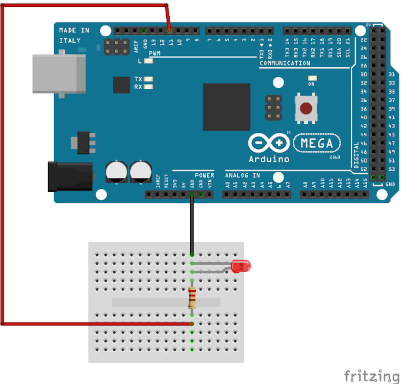

Projet 1
Le Projet 1 consiste à allumer une led avec un arduino.
Pour ce projet il vous faudra:
-une résistance
-une
led bien évidement

Le montage est très simple sauf qu'il faut faire attention à la patte de la led la plus petite patte doit
être relier
au moins.
Pour le code il vous suffit de copier de le code et le coller dans l'IDE.Le code est ci dessous:
/*
led 1
*/
void setup() {
// initialize digital pin LED_BUILTIN as an output.
pinMode(11, OUTPUT);
}
// the loop function runs over and over again forever
void loop() {
digitalWrite(11, HIGH);
(500);
digitalWrite(11, LOW);
delay(500);
}